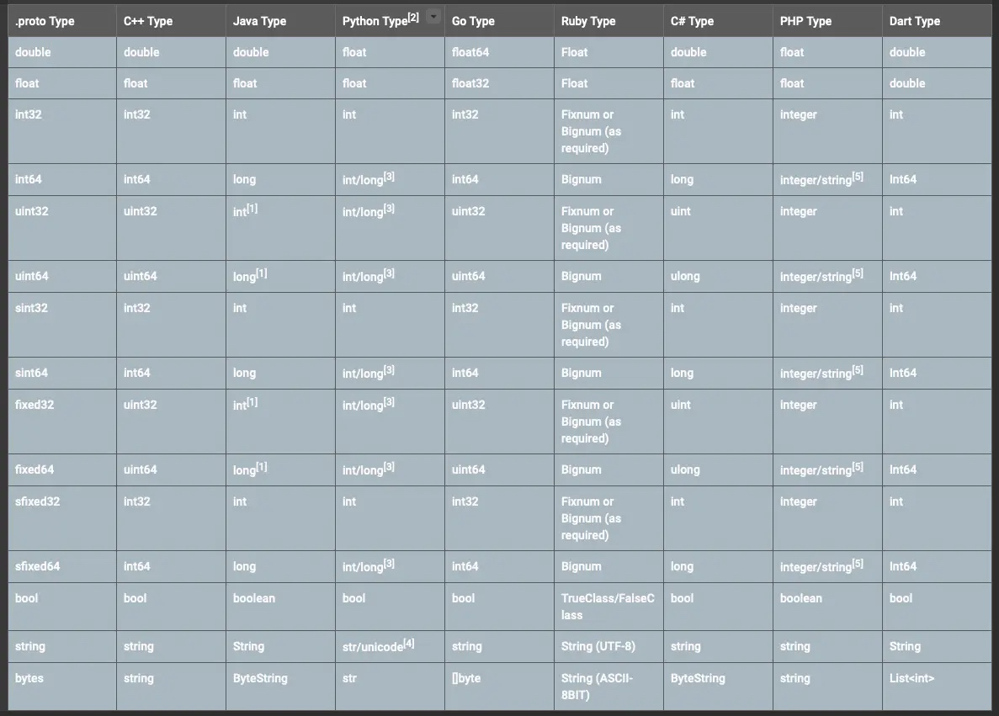

之前在IMSDK以及游戏开发的过程中接触并简单使用了ProtoBuf，作为网络通信的主要序列化手段。对其他大公司的Apk进行解包，发现基本都包含ProtoBuf的依赖库。对比了通用的Json与ProtoBuf在网络连接方面的性能数据，在有大量数据量的情况下，差距尤其明显。
接下来主要对ProtoBuf序列化、反序列化以及使用进行一些简单的了解。
序列化
想要学习ProtoBuf，首先得了解下序列化。
- 序列化：把对象转化为可传输的字节序列过程称为序列化。
- 反序列化：把字节序列还原为对象的过程称为反序列化。
为什么要序列化
序列化最终的目的是为了对象可以跨平台存储，和进行网络传输。而我们进行跨平台存储和网络传输的方式就是IO，而我们的IO支持的数据格式就是字节数组。
因为我们单方面的只把对象转成字节数组还不行，因为没有规则的字节数组我们是没办法把对象的本来面目还原回来的，所以我们必须在把对象转成字节数组的时候就制定一种规则（序列化），那么我们从IO流里面读出数据的时候再以这种规则把对象还原回来（反序列化）。

序列化技术选型的关键点
协议是否支持跨平台
如果你们公司有好多种语言进行混合开发，那么就肯定不适合用有语言局限性的序列化协议，要不然你JDK序列化出来的格式，其他语言并没法支持。
序列化的速度
如果序列化的频率非常高，那么选择序列化速度快的协议会为你的系统性能提升不少。
序列化出来的大小
如果频繁的在网络中传输的数据那就需要数据越小越好，小的数据传输快，也不占带宽，也能整体提升系统的性能。
何为ProtoBuf
官方文档给出的定义和描述：
Protocol Buffers 是一种语言无关、平台无关、可扩展的序列化结构数据的方法，它可用于（数据）通信协议、数据存储等。
Protocol Buffers 是一种灵活，高效，自动化机制的结构数据序列化方法。
你可以定义数据的结构，然后使用特殊生成的源代码轻松的在各种数据流中使用各种语言进行编写和读取结构数据。你甚至可以更新数据结构，而不破坏由旧数据结构编译的已部署程序。
与Json、Xml的对比
如果要将 ProtoBuf、XML、JSON 三者放到一起去比较，应该区分两个维度。一个是数据结构化，一个是数据序列化。这里的数据结构化主要面向开发或业务层面，数据序列化面向通信或存储层面。数据结构化侧重人类可读性甚至有时会强调语义表达能力，而数据序列化侧重效率和压缩。
相比于ProtoBuf，Json和Xml的数据结构化更强，更易于开发人员阅读理解。但在数据序列化方面，ProtoBuf具有明显的优势，在效率、速度、空间三方面几乎全面占用，极尽所能压榨了每一寸空间和性能。可以看出，ProtoBuf重点侧重于数据序列化而非数据结构化。
- XML、JSON、ProtoBuf 都具有数据结构化和数据序列化的能力
- XML、JSON 更注重数据结构化，关注人类可读性和语义表达能力。ProtoBuf 更注重数据序列化，关注效率、空间、速度，人类可读性差，语义表达能力不足（为保证极致的效率，会舍弃一部分元信息）
- ProtoBuf 的应用场景更为明确，XML、JSON 的应用场景更为丰富。
速度测试和序列化后数据大小对比
测试10万次序列化
测试10万次反序列化
带宽计算对比
以腾讯云带宽成本进行核算
以QPS 1万计算
相比于XML、JSON，ProtoBuf 具有以下优势：
- 语言无关、平台无关。 即 ProtoBuf 支持 Java、C++、Python 等多种语言，支持多个平台
- 高效。 即比 XML 更小（3 ~ 10倍）、更快（20 ~ 100倍）、更为简单
- 扩展性、兼容性好。 你可以更新数据结构，而不影响和破坏原有的旧程序
使用ProtoBuf
Protobuf 有两个大版本，proto2 和 proto3，如果是新接触的话，建议直接入手 proto3 版本。proto3 相对 proto2 而言，简言之就是支持更多的语言（Ruby、C#等）、删除了一些复杂的语法和特性、引入了更多的约定等。
- proto2 支持
Java、Python、Objective-C、C++ - proto3 支持
Go、JavaNano、Ruby、C#
基础使用
安装protoc
- protoc下载：GitHub官网， 将bin路径添加到path环境变量中
- 查看是否安装成功：控制台输入
protoc --version，控制台输出版本信息代表成功，如：libprotoc 3.7.1
IDEA 安装插件
- IDEA 插件库搜索安装 Protobuf Support 即可
- 此插件可以不用安装，但是这有助于一些源码阅读的便利性和一些编码提示
编写proto文件
定义一个 JetProtos.proto 文件
syntax = "proto3"; // PB协议版本
import "google/protobuf/any.proto"; // 引用外部的message，可以是本地的，也可以是此处比较特殊的 Any
package jet.protobuf; // 包名，其他 proto 在引用此 proto 的时候，就可以使用 test.protobuf.PersonTest 来使用，
// 注意：和下面的 java_package 是两种易混淆概念，同时定义的时候，java_package 具有较高的优先级
option java_package = "com.jet.protobuf"; // 生成类的包名，注意：会在指定路径下按照该包名的定义来生成文件夹
option java_outer_classname="PersonTestProtos"; // 生成类的类名，注意：下划线的命名会在编译的时候被自动改为驼峰命名
message PersonTest {
int32 id = 1; // int 类型
string name = 2; // string 类型
string email = 3;
Sex sex = 4; // 枚举类型
repeated PhoneNumber phone = 5; // 引用下面定义的 PhoneNumber 类型的 message
map<string, string> tags = 6; // map 类型
repeated google.protobuf.Any details = 7; // 使用 google 的 any 类型
// 定义一个枚举
enum Sex {
DEFAULT = 0;
MALE = 1;
Female = 2;
}
// 定义一个 message
message PhoneNumber {
string number = 1;
PhoneType type = 2;
enum PhoneType {
MOBILE = 0;
HOME = 1;
WORK = 2;
}
}
}
编译成 java 文件
进入 proto 文件所在路径，输入下面 protoc 命令（后面有三部分参数），然后将编译得出的 java 文件拷贝到项目中即可（此 java 文件可以理解成使用的数据对象）：
protoc -I=./ --java_out=./ ./JetProtos.proto
或
protoc -proto_path=./ --java_out=./ ./JetProtos.proto
参数说明：
- -I 等价于 -proto_path：指定 .proto 文件所在的路径
- --java_out：编译成 java 文件时，标明输出目标路径
- ./JetProtos.proto：指定需要编译的 .proto 文件
使用Proto文件
- Gradle引入指定包
implementation 'com.google.protobuf:protobuf-java:3.17.3'
- 使用
序列化和反序列化有多种方式，可以是 byte[]，也可以是 inputStream 等
package com.jet.mini.protobuf;
import com.google.protobuf.ByteString;
import com.google.protobuf.InvalidProtocolBufferException;
import java.io.ByteArrayInputStream;
import java.io.ByteArrayOutputStream;
import java.io.IOException;
/**
* @ClassName: ProtoTest
* @Description: ProtoBuf 测试
* @Author: Jet.Chen
* @Date: 2019/5/8 9:55
* @Version: 1.0
**/
public class ProtoTest {
public static void main(String[] args) {
try {
/** Step1：生成 personTest 对象 */
// personTest 构造器
PersonTestProtos.PersonTest.Builder personBuilder = PersonTestProtos.PersonTest.newBuilder();
// personTest 赋值
personBuilder.setName("Jet Chen");
personBuilder.setEmail("ckk505214992@gmail.com");
personBuilder.setSex(PersonTestProtos.PersonTest.Sex.MALE);
// 内部的 PhoneNumber 构造器
PersonTestProtos.PersonTest.PhoneNumber.Builder phoneNumberBuilder = PersonTestProtos.PersonTest.PhoneNumber.newBuilder();
// PhoneNumber 赋值
phoneNumberBuilder.setType(PersonTestProtos.PersonTest.PhoneNumber.PhoneType.MOBILE);
phoneNumberBuilder.setNumber("17717037257");
// personTest 设置 PhoneNumber
personBuilder.addPhone(phoneNumberBuilder);
// 生成 personTest 对象
PersonTestProtos.PersonTest personTest = personBuilder.build();
/** Step2：序列化和反序列化 */
// 方式一 byte[]：
// 序列化
// byte[] bytes = personTest.toByteArray();
// 反序列化
// PersonTestProtos.PersonTest personTestResult = PersonTestProtos.PersonTest.parseFrom(bytes);
// System.out.println(String.format("反序列化得到的信息，姓名：%s，性别：%d，手机号：%s", personTestResult.getName(), personTest.getSexValue(), personTest.getPhone(0).getNumber()));
// 方式二 ByteString：
// 序列化
// ByteString byteString = personTest.toByteString();
// System.out.println(byteString.toString());
// 反序列化
// PersonTestProtos.PersonTest personTestResult = PersonTestProtos.PersonTest.parseFrom(byteString);
// System.out.println(String.format("反序列化得到的信息，姓名：%s，性别：%d，手机号：%s", personTestResult.getName(), personTest.getSexValue(), personTest.getPhone(0).getNumber()));
// 方式三 InputStream
// 粘包,将一个或者多个protobuf 对象字节写入 stream
// 序列化
ByteArrayOutputStream byteArrayOutputStream = new ByteArrayOutputStream();
personTest.writeDelimitedTo(byteArrayOutputStream);
// 反序列化，从 steam 中读取一个或者多个 protobuf 字节对象
ByteArrayInputStream byteArrayInputStream = new ByteArrayInputStream(byteArrayOutputStream.toByteArray());
PersonTestProtos.PersonTest personTestResult = PersonTestProtos.PersonTest.parseDelimitedFrom(byteArrayInputStream);
System.out.println(String.format("反序列化得到的信息，姓名：%s，性别：%d，手机号：%s", personTestResult.getName(), personTest.getSexValue(), personTest.getPhone(0).getNumber()));
} catch (InvalidProtocolBufferException e) {
e.printStackTrace();
} catch (IOException e) {
e.printStackTrace();
}
}
}
message部分语法说明
-
在 proto3 中，枚举的第一个常量名的编号必须为 0
在 proto3 中，由于默认值的规则进行了调整，而枚举的默认值为第一个，所以必须将第一个常量的编号置为 0，但是这与我们的业务有时候是有冲突的，所以，我们常将第一个常量设为：xx_UNSPECIFIED = 0，如：ENUM_TYPE_UNSPECIFIED = 0；，当然这不是我们自己约定的，这是 Google API Guilder 中建议的。 -
同一个 proto 文件中，多个枚举之间不允许定义相同的常量名
如下面的 message 在编译的时候就会报错 IDEA is already defined in "xxx"：
enum IDE1 {
IDEA = 0;
ECLIPSE = 1;
}
enum IDE2 {
IDEA = 7;
ECLIPSE = 8;
}
-
关于数据类型匹配
 -
关于默认值
proto3 中，数据的默认值不再支持自定义，而是由程序自行推倒：- string：默认值为空
- bytes：默认值为空
- bools：默认值为 false
- 数字类型：默认值为 0
- 枚举类型： 默认为定义的第一个元素，并且编号必须为 0
- message 类型：默认值为 DEFAULT_INSTANCE，其值相当于空的 message
Android开发使用
引入依赖
在需要使用Protobuf的项目中引入依赖
implementation 'com.google.protobuf:protobuf-java:3.17.3'
implementation 'com.google.protobuf:protoc:3.17.3'
implementation 'com.squareup.retrofit2:converter-protobuf:2.9.0'
implementation 'com.squareup.okhttp3:logging-interceptor:3.9.0'
implementation 'com.squareup.retrofit2:retrofit:2.9.0'
配置Gradle插件
在Root/build.gradle中加入Protobuf插件
buildscript {
repositories {
google()
mavenCentral()
}
dependencies {
classpath "com.android.tools.build:gradle:7.0.2"
classpath "org.jetbrains.kotlin:kotlin-gradle-plugin:1.5.30"
classpath 'com.google.protobuf:protobuf-gradle-plugin:0.8.17'
// NOTE: Do not place your application dependencies here; they belong
// in the individual module build.gradle files
}
}
在app/build.gradle中配置插件
plugins {
id "com.google.protobuf"
id 'com.android.application'
id 'kotlin-android'
}
在android{}中加入
sourceSets {
main {
proto {
srcDir 'src/main/proto'
include '**/*.proto'
}
java {
srcDir 'src/main/java'
}
}
}
在android{}同级加入
protobuf {
protoc {
artifact = 'com.google.protobuf:protoc:3.17.3' // 也可以配置本地编译器路径
}
generateProtoTasks {
all().each { task ->
task.builtins {
remove java
}
task.builtins {
java {}// 生产java源码
}
}
}
}
安装Proto支持插件
Settings–>Plugins–>搜索protobuf–>找到Protobuf插件点击安装，重启as即可，此时porto文件会有一个彩环，并且编写proto文件时也会有相应的提示
编写proto文件
在app\src\main目录中新建proto文件夹，并新建对应的proto文件，这里以InfoRequest.proto为例
InfoRequest.proto文件内容为：
syntax = "proto3";
package com.ifantastic.proto;
option java_package = "com.ifantastic.proto.model";
message InfoRequest {
string info = 1;
int32 code = 2;
}
message InfoResponse {
int32 code = 1;
string msg = 2;
}
生成java文件
在Gradle中执行generateDebugProto或者Build/Clean Project项目，此时会在/app/build/generated/source/proto中生成对应的java文件。
网络请求调用
早在之前Retrofit就已经支持ProtoBuf序列化的方式，只需要添加Protobuf的ConverterFactory就可以正常使用了。
ProtoBuf编码结构
TLV格式是我们比较熟悉的编码格式
所谓的TLV即 Tag - Length - Value。Tag 作为该字段的唯一标识， Length代表Value数据域的长度，最后的Value便是数据本身。
ProtoBuf编码采用类似的结构，但是实际上又有较大区别，其编码结构可见下图：
首先，每一个 message 进行编码，其结果由一个个字段组成，每个字段可划分为 Tag - [Length] - Value，如下图所示：
特别注意这里的 [Length] 是可选的，含义是针对不同类型的数据编码结构可能会变成 Tag - Value 的形式，如果变成这样的形式，没有了 Length 我们该如何确定 Value 的边界？答案就是 Varint 编码，在后面将详细介绍。
继续深入 Tag ，Tag 由 field_number 和 wire_type 两个部分组成：
- field_number: message 定义字段时指定的字段编号
- wire_type: ProtoBuf 编码类型，根据这个类型选择不同的 Value 编码方案。
整个 Tag 采用 Varints 编码方案进行编码，Varints 编码会在后面详细介绍。
Tag 结构如下图所示：
3 bit 的 wire_type 最多可以表达 8 种编码类型，目前 ProtoBuf 已经定义了 6 种，如下图所示：
第一列即是对应的类型编号，第二列为面向最终编码的编码类型，第三列是面向开发者的 message 字段的类型。
注意其中的 Start group 和 End group 两种类型已被遗弃。
另外要特别注意一点，虽然 wire_type 代表编码类型，但是 Varint 这个编码类型里针对 sint32、sint64 又会有一些特别编码（ZigTag 编码）处理，相当于 Varint 这个编码类型里又存在两种不同编码。
现在我们可以理解一个 message 编码将由一个个的 field 组成，每个 field 根据类型将有如下两种格式：
- Tag - Length - Value：编码类型表中 Type = 2 即 Length-delimited 编码类型将使用这种结构，
- Tag - Value：编码类型表中 Varint、64-bit、32-bit 使用这种结构。
其中 Tag 由字段编号 field_number 和 编码类型 wire_type 组成， Tag 整体采用 Varints 编码。
Varints 编码
Varints 编码的规则主要为以下三点：
- 在每个字节开头的 bit 设置了 msb(most significant bit )，标识是否需要继续读取下一个字节
- 存储数字对应的二进制补码
- 补码的低位排在前面
先来看一个最为简单的例子：
int32 val = 1; // 设置一个 int32 的字段的值 val = 1; 这时编码的结果如下
原码：0000 ... 0000 0001 // 1 的原码表示
补码：0000 ... 0000 0001 // 1 的补码表示
Varints 编码：0#000 0001（0x01） // 1 的 Varints 编码，其中第一个字节的 msb = 0
- 编码过程：
数字 1 对应补码 0000 ... 0000 0001（规则 2），从末端开始取每 7 位一组并且反转排序（规则 3），因为 0000 ... 0000 0001 除了第一个取出的 7 位组（即原数列的后 7 位），剩下的均为 0。所以只需取第一个 7 位组，无需再取下一个 7 bit，那么第一个 7 位组的 msb = 0。最终得到
0 | 000 0001（0x01）
- 解码过程：
我们再做一遍解码过程，加深理解。
编码结果为 0#000 0001（0x01）。首先，每个字节的第一个 bit 为 msb 位，msb = 1 表示需要再读一个字节（还未结束），msb = 0 表示无需再读字节（读取到此为止）。
在上面的例子中，数字 1 的 Varints 编码中 msb = 0，所以只需要读完第一个字节无需再读。去掉 msb 之后，剩下的 000 0001 就是补码的逆序，但是这里只有一个字节，所以无需反转，直接解释补码 000 0001，还原即为数字 1。
注意：这里编码数字 1，Varints 只使用了 1 个字节。而正常情况下 int32 将使用 4 个字节存储数字 1。
再看一个需要两个字节的数字 666 的编码：
int32 val = 666; // 设置一个 int32 的字段的值 val = 666; 这时编码的结果如下
原码：000 ... 101 0011010 // 666 的源码
补码：000 ... 101 0011010 // 666 的补码
Varints 编码：1#0011010 0#000 0101 （9a 05） // 666 的 Varints 编码
- 编码过程：
666 的补码为 000 ... 101 0011010，从后依次向前取 7 位组并反转排序，则得到：
0011010 | 0000101
加上 msb，则
1 0011010 | 0 0000101 （0x9a 0x05）
- 解码过程：
编码结果为 1#0011010 0#000 0101 （9a 05），与第一个例子类似，但是这里的第一个字节 msb = 1，所以需要再读一个字节，第二个字节的 msb = 0，则读取两个字节后停止。读到两个字节后先去掉两个 msb，剩下：
0011010 000 0101
将这两个 7-bit 组反转得到补码：
000 0101 0011010
然后还原其原码为 666。
注意：这里编码数字 666，Varints 只使用了 2 个字节。而正常情况下 int32 将使用 4 个字节存储数字 666。
仔细品味上述的 Varints 编码，我们可以发现 Varints 的本质实际上是每个字节都牺牲一个 bit 位（msb），来表示是否已经结束（是否还需要读取下一个字节），msb 实际上就起到了 Length 的作用，正因为有了 msb（Length），所以我们可以摆脱原来那种无论数字大小都必须分配四个字节的窘境。通过 Varints 我们可以让小的数字用更少的字节表示。从而提高了空间利用和效率。
这里为什么强调牺牲？因为每个字节都拿出一个 bit 做 msb，而原先这个 bit 是可直接用来表示 Value 的，现在每个字节都少了一个 bit 位即只有 7 位能真正用来表达 Value。那就意味这 4 个字节能表达的最大数字为 228，而不再是 232 了。
这意味着什么？意味着当数字大于 228 时，采用 Varints 编码将导致分配 5 个字节，而原先明明只需要 4 个字节，此时 Varints 编码的效率不仅不是提高反而是下降。
但这并不影响 Varints 在实际应用时的高效，因为事实证明，在大多数情况下，小于 228 的数字比大于 228 的数字出现的更为频繁。
到目前为止，好像一切都很完美。但是当前的 Varints 编码却存在着明显缺陷。我们的例子好像只给出了正数，我们来看一下负数的 Varints 编码情况。
int32 val = -1
原码：1000 ... 0001 // 注意这里是 8 个字节
补码：1111 ... 1111 // 注意这里是 8 个字节
再次复习 Varints 编码：对补码取 7 bit 一组，低位放在前面。
上述补码 8 个字节共 64 bit，可分 9 组且这 9 组均为 1，这 9 组的 msb 均为 1（因为还有最后一组）
最后剩下一个 bit 的 1，用 0 补齐作为最后一组放在最后，最后得到 Varints 编码
Varints 编码：1#1111111 ... 0#000 0001 （FF FF FF FF FF FF FF FF FF 01）
注意，因为负数必须在最高位（符号位）置 1，这一点意味着无论如何，负数都必须占用所有字节，所以它的补码总是占满 8 个字节。你没法像正数那样去掉多余的高位（都是 0）。再加上 msb，最终 Varints 编码的结果将固定在 10 个字节。
为什么是十个字节？ int32 不应该是 4 个字节吗？这里是 ProtoBuf 基于兼容性的考虑（比如开发者将 int64 的字段改成 int32 后应当不影响旧程序），而将 int32 扩展成 int64 的八个字节。
为什么之前讲正数的时候没有这种扩展？。请仔细品味 Varints 编码，正数的前提下 int32 和 int64 天然兼容！
所以目前的情况是我们定义了一个 int32 类型的变量，如果将变量值设置为负数，那么直接采用 Varints 编码的话，其编码结果将总是占用十个字节，这显然不是我们希望得到的结果。如何解决？
ZigZag 编码
为了解决Varints编码对负数编码效率低这个问题，ProtoBuf 为我们提供了 sint32、sint64 两种类型，当你在使用这两种类型定义字段时，ProtoBuf 将使用 ZigZag 编码，而 ZigZag 编码将解决负数编码效率低的问题。
ZigZag 的原理和概念比我们想象的简单易懂，一句话就可概括介绍 ZigZag 编码：
ZigZag 编码：有符号整数映射到无符号整数，然后再使用 Varints 编码
对于 ZigZag 编码的思维不难理解，既然负数的 Varints 编码效率很低，那么就将负数映射到正数，然后对映射后的正数进行 Varints 编码。解码时，解出正数之后再按映射关系映射回原来的负数。
例如我们设置 int32 val = -2。映射得到 3，那么对数字 3 进行 Varints 编码，将结果存储或发送出去。接收方接到数据后进行 Varints 解码，得到数字 3，再将 3 映射回 -2。
这里的“映射”是以移位实现的，并非存储映射表。
Varint 类型
介绍了 Varints 编码和 ZigZag 编码之后，我们就可以继续深入分析每个类型的编码。
在第一节中我们提到了 wire_type 目前已定义 6 种，其中两种已被遗弃（Start group 和 End group），只剩下四种类型： Varint、64-bit、Length-delimited、32-bit。
接下来我们就来一个个详细分析，彻底搞明白 ProtoBuf 针对每种类型的编码策略。
注意，我们在之前已经强调过，与其它三种类型不同，Varint 类型里不止一种编码策略。 除了 int32、int64 等类型的 Varints 编码，还有 sint32、sint64 类型的 ZigZag 编码。
int32、int64、uint32、uint64、bool、enum
当我们使用 int32、int64、uint32、uint64、bool、enum 声明字段类型时，其字段值将使用之前介绍的 Varints 编码。
其中 bool 的本质为 0 和 1，enum 本质为整数常量。
在结合本文开头介绍的编码结构： Tag - [Length] - Value，这里的 Value 采用 Varints 编码，因此不需要 Length，则编码结构为 Tag - Value，其中 Tag 和 Value 均采用 Vartins 编码。
int32、int64、uint32、uint64
来看一个最简单的 int32 的小例子：
syntax = "proto3";
// message 定义
message Example1 {
int32 int32Val = 1;
}
在程序中设置字段值为 1，其编码结果为：
// 设置字段值 为 1
Example1 example1;
example1.set_int32val(1);
// 编码结果
tag-(Varints)0#0001 000 + value-(Varints)0#000 0001 = 0x08 0x01
在程序中设置字段值为 666，其编码结果为：
// 设置字段值 为 666
Example1 example1;
example1.set_int32val(666);
// 编码结果
tag-(Varints)00001 000 + value-(Varints)1#0011010 0#000 0101 = 0x08 0x9a 0x05
在程序中设置字段值为 -1，其编码结果为：
// 设置字段值 为 1
Example1 example1;
example1.set_int32val(-1);
// 编码结果
tag-(Varints)00001 000 + value-(Varints)1#1111111 ... 0#000 0001 = 0x08 0xFF 0xFF 0xFF 0xFF 0xFF 0xFF 0xFF 0xFF 0xFF 0x01
int64、uint32、uint64 与 int32 同理
bool、enum
bool 的例子：
syntax = "proto3";
// message 定义
message Example1 {
bool boolVal = 1;
}
在程序中设置字段值为 true，其编码结果为：
// 设置字段值 为 true
Example1 example1;
example1.set_boolval(true);
// 编码结果
tag-(Varints)00001 000 + value-(Varints)0#000 0001 = 08 01
在程序中设置字段值为 false，其编码结果为：
// 设置字段值 为 false
Example1 example1;
example1.set_boolval(false);
// 编码结果
空
这里有个有意思的现象，当 boolVal = false 时，其编码结果为空，为什么？
这里是 ProtoBuf 为了提高效率做的又一个小技巧：规定一个默认值机制，当读出来的字段为空的时候就设置字段的值为默认值。而 bool 类型的默认值为 false。也就是说将 false 编码然后传递（消耗一个字节），不如直接不输出任何编码结果（空），终端解析时发现该字段为空，它会按照规定设置其值为默认值（也就是 false）。如此，可进一步节省空间提高效率。
enum 的例子：
syntax = "proto3";
// message 定义
message Example1 {
enum COLOR {
YELLOW = 0;
RED = 1;
BLACK = 2;
WHITE = 3;
BLUE = 4;
}
// 枚举常量必须在 32 位整型值的范围
// 使用 Varints 编码,对负数不够高效，因此不推荐在枚举中使用负数
COLOR colorVal = 1;
}
在程序中设置字段值为 Example1_COLOR_BLUE，其编码结果为：
// 设置字段值 为 Example1_COLOR_BLUE
Example1 example1;
example1.set_colorval(Example1_COLOR_BLUE);
// 编码结果
tag-(Varints)00001 000 + value-(Varints)0#000 0100 = 08 04
sint32、sint64
sint32、sint64 将采用 ZigZag 编码。编码结构依然为 Tag - Value，只不过在编码和解码的过程中多出一个映射的过程，映射后依然采用 Varints 编码。
来看 sint32 的例子：
syntax = "proto3";
// message 定义
message Example1 {
sint32 sint32Val = 1;
}
在程序中设置字段值为 -1，其编码结果为：
// 设置字段值 为 -1
Example1 example1;
example1.set_colorval(-1);
// 编码结果，1 映射回 -1
tag-(Varints)00001 000 + value-(Varints)0#000 0001 = 08 01
在程序中设置字段值为 -2，其编码结果为：
// 设置字段值 为 -2
Example1 example1;
example1.set_colorval(-2);
// 编码结果，3 映射回 -2
编码结果：tag-(Varints)00001 000 + value-(Varints)0#000 0011 = 08 03
sint64 与 sint32 同理。
int、uint 和 sint: 之所以同时出现了这三种类型，是因为历史和代码迭代的结果。ProtoBuf 最初只有 int 类型，由于 int 类型不适合负数（负数编码效率低），所以提供了 sint。因为 sint 的一部分正数其实是表达的负数，所以其正数范围有所减小，所以在一些全是正数场景下需要提供 uint 类型。
64-bit 和 32-bit 类型
64-bit 和 32-bit 比较简单，与 Varints 一样其编码结构为 Tag-Value，不同的是不管数字大小，64-bit 存储 8 字节，32-bit 存储 4 字节。读取时同理，64-bit 直接读取 8 字节，32-bit 直接读取 4 字节。
为什么需要 64-bit 和 32-bit？之前已经分析过了 Varints 编码在一定范围内是有高效的，超过某一个数字占用字节反而更多，效率更低。如果现在有场景是存在大量的大数字，那么使用 Varints 就不太合适了，此时使用 64-bit 和 32-bit 更为合适。具体的，如果数值比 256 大的话，64-bit 这个类型比 uint64 高效，如果数值比 228 大的话，32-bit 这个类型比 uint32 高效。
fixed64、sfixed64、double
来看例子：
// message 定义
syntax = "proto3";
message Example1 {
fixed64 fixed64Val = 1;
sfixed64 sfixed64Val = 2;
double doubleVal = 3;
}
在程序中分别设置字段值 1、-1、1.2，其编码结果为：
// 设置字段值 为 -2
example1.set_fixed64val(1)
example1.set_sfixed64val(-1)
example1.set_doubleval(1.2)
// 编码结果，总是 8 个字节
09 # 01 00 00 00 00 00 00 00
11 # FF FF FF FF FF FF FF FF （没有 ZigZag 编码）
19 # 33 33 33 33 33 33 F3 3F
fixed32、sfixed32、float
与 64-bit 同理。
Length-delimited 类型
string、bytes、EmbeddedMessage、repeated
终于遇到了体现编码结构图中 [Length] 意义的类型了。Length-delimited 类型的编码结构为 Tag - Length - Value
这种编码方式很好理解，来看例子：
syntax = "proto3";
// message 定义
message Example1 {
string stringVal = 1;
bytes bytesVal = 2;
message EmbeddedMessage {
int32 int32Val = 1;
string stringVal = 2;
}
EmbeddedMessage embeddedExample1 = 3;
repeated int32 repeatedInt32Val = 4;
repeated string repeatedStringVal = 5;
}
设置相应的值：
Example1 example1;
example1.set_stringval("hello,world");
example1.set_bytesval("are you ok?");
Example1_EmbeddedMessage *embeddedExample2 = new Example1_EmbeddedMessage();
embeddedExample2->set_int32val(1);
embeddedExample2->set_stringval("embeddedInfo");
example1.set_allocated_embeddedexample1(embeddedExample2);
example1.add_repeatedint32val(2);
example1.add_repeatedint32val(3);
example1.add_repeatedstringval("repeated1");
example1.add_repeatedstringval("repeated2");
最终编码的结果为：
0A 0B 68 65 6C 6C 6F 2C 77 6F 72 6C 64
12 0B 61 72 65 20 79 6F 75 20 6F 6B 3F
1A 10 08 01 12 0C 65 6D 62 65 64 64 65 64 49 6E 66 6F
22 02 02 03[ proto3 默认 packed = true]（编码结果打包处理，见下一小节的介绍）
2A 09 72 65 70 65 61 74 65 64 31 2A 09 72 65 70 65 61 74 65 64 32(repeated string 为啥不进行默认 packed ?)
读者可对照上面介绍过的编码来理解这段相对复杂的编码结果。（为降低难度，已按字段分行，即第一个字段的编码结果对应第一行，第二个字段对应第二行...）
补充 packed 编码
proto3 中已默认设置packed=true。
packed 目前只能用于 primitive 类型。
packed = true 主要使让 ProtoBuf 为我们把 repeated primitive 的编码结果打包，从而进一步压缩空间，进一步提高效率、速度。这里打包的含义其实就是：原先的 repeated 字段的编码结构为 Tag-Length-Value-Tag-Length-Value-Tag-Length-Value...，因为这些 Tag 都是相同的（同一字段），因此可以将这些字段的 Value 打包，即将编码结构变为 Tag-Length-Value-Value-Value...
拓展
Protostuff
相对我们常用的json来说，Protocol Buffer门槛更高，因为需要编写.proto文件，再把它编译成目标语言，这样使用起来就很麻烦。但是现在有了protostuff之后，就不需要依赖.proto文件了，他可以直接对POJO进行序列化和反序列化，使用起来非常简单。
这个序列化框架比ProtoBuf更加易用，且整体效率大小表现更好。
结论
序列化：
1. 速度上：protostuff比protobuf快3倍左右，protobuf比xml快4-5倍，该倍数随着序列化对象的增加，基本保持不变。
2. CPU上：protostuff占用最少，protobuf其次，xml最后。
3. 内存上：protostuff占用最少，protobuf其次，xml最后。
4. 生成文件大小：protostuff占用最少，protobuf其次，xml最后，前面两者是后者的1/4左右。
反序列化
1. 速度上：在反序列化对象数量较少的情况下，protobuf比protostuff快1/4左右，比xml快10+倍。但随着对象数量的增加，protobuf发生了速率明显变慢的情况！从而被protostuff赶超。
2. CPU上：protostuff占用最少，protobuf其次，xml最后。
3. 内存上：protostuff占用最少，protobuf其次，xml最后。
gRPC
gRPC是什么可以用官网的一句话来概括
A high-performance, open-source universal RPC framework
gRPC = google开发的RPC协议
gRPC vs. Restful API
gRPC和restful API都提供了一套通信机制，用于server/client模型通信，而且它们都使用http作为底层的传输协议(严格地说, gRPC使用的http2.0，而restful api则不一定)。不过gRPC还是有些特有的优势，如下：
- gRPC可以通过protobuf来定义接口，从而可以有更加严格的接口约束条件。关于protobuf可以参见笔者之前的小文Google Protobuf简明教程
- 另外，通过protobuf可以将数据序列化为二进制编码，这会大幅减少需要传输的数据量，从而大幅提高性能。
- gRPC可以方便地支持流式通信(理论上通过http2.0就可以使用streaming模式, 但是通常web服务的restful api似乎很少这么用，通常的流式数据应用如视频流，一般都会使用专门的协议如HLS，RTMP等，这些就不是我们通常web服务了，而是有专门的服务器应用。）
优点
- 接口有更严格的约束
- 更安全
- 性能更好 。
这3个优点来源于gRPC使用的protobuf
MMKV
MMKV 是腾讯旗下开发的一款基于MMAP内存映射的存储组件，采用 key - value方式存储，底层序列化/反序列化使用 protobuf 实现，性能高，稳定性强。在iOS和Android端都有相应的开源库。
其有以下优点：
- 非常高效: MMKV使用mmap与文件保持内存同步，使用protobuf对数值进行编码/解码，充分利用Android，实现最佳性能。
- 多进程并发: MMKV支持进程之间的并发读写访问。
- 易于使用的: 你可以随时使用MMKV。所有的更改都会立即保存，不需要同步，也不需要apply调用。
- 小: 少数几个文件:MMKV包含进程锁、编码/解码帮助程序和mmap逻辑等等。很整洁。大约60K的二进制大小:MMKV在每个架构上增加了大约60K的应用程序大小，而压缩(apk)时增加的就少多了。